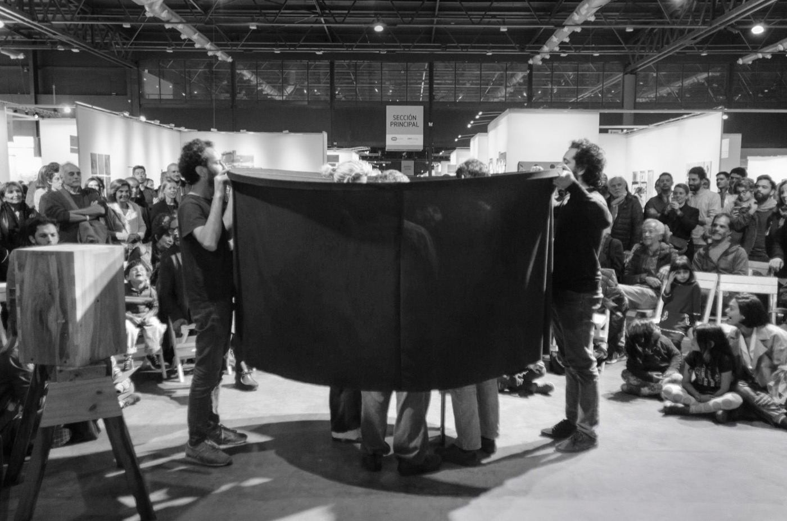
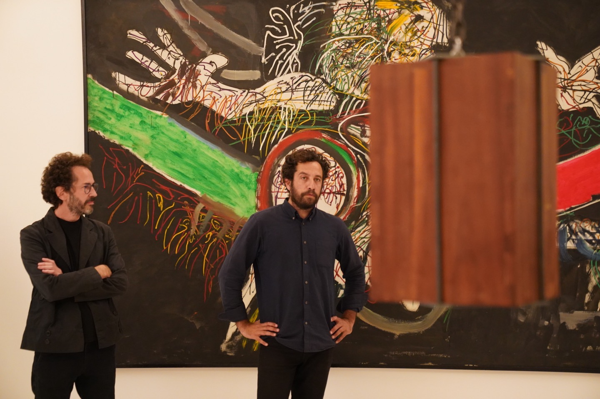
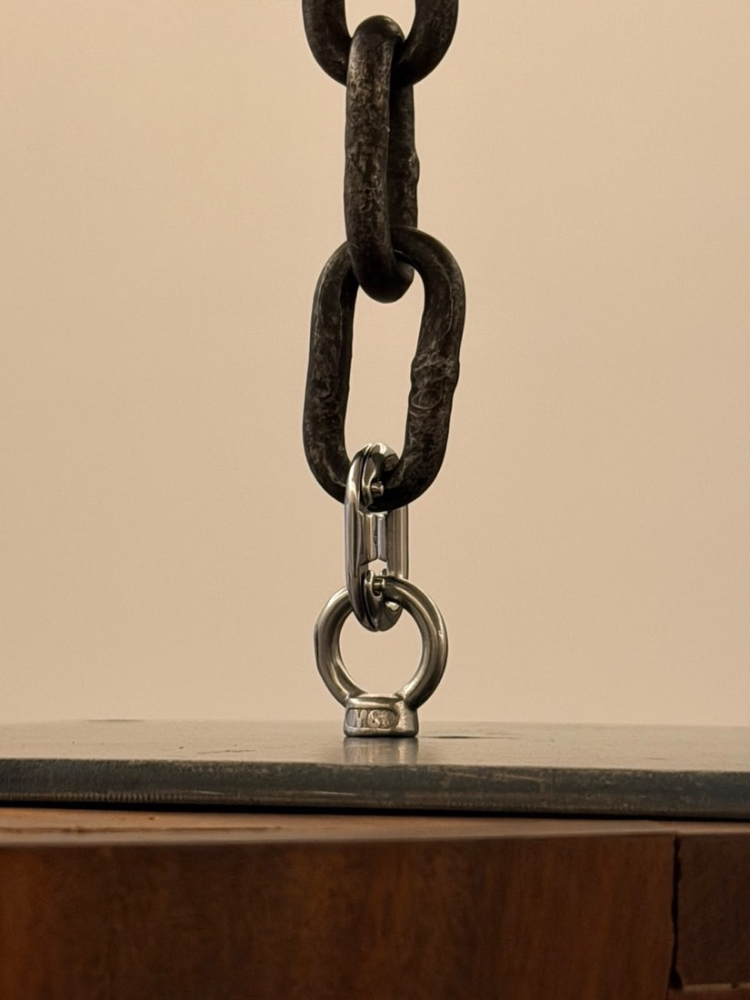

Un meteorito para la Sociedad Científica Argentina del año 2105
Un prisma navega
hacia otras manos,
hacia otros ojos
Un meteorito para la Sociedad Científica Argentina del año 2105 es una obra de Faivovich & Goldberg iniciada a partir de la legítima tenencia de un meteorito cedido por un donante anónimo, cuya incorporación al acervo de la Sociedad Científica Argentina no pudo concretarse en el presente. Frente a esa imposibilidad, los artistas transformaron un proceso inconcluso de donación en una cápsula de tiempo: el meteorito fue encapsulado el 25 de mayo de 2018 y su destino fue diferido al 9 de julio de 2105, fecha en la que la Sociedad Científica Argentina del futuro podrá decidir sobre su posible apertura.
Concebida desde su origen como una obra en el tiempo, plantea un problema de transmisión intergeneracional: cómo sostener, durante ochenta y siete años, la legibilidad material, jurídica, simbólica y económica de una voluntad dirigida a las generaciones futuras.
Tras una custodia fundacional a cargo de los artistas (2018–2025), cuyo cierre quedó certificado en un registro público, la obra recorre una secuencia de custodias: pasa de un custodio al siguiente cada siete años —un septenio— hasta que un trienio final cierra la cadena. Con este sistema de circulación, los artistas articulan mecanismos de gobierno que resguardan la integridad de la obra en su viaje hacia el próximo siglo.
La cadena, 13 tramos. Hoy la obra está en la custodia 2 de 13; el tramo en azul es el de hoy.


![Encapsulamiento25.05.2018Ceremonia pública, arteBA · foto [crédito]JPG ↓ 1400 px · 165 KB](img/prensa/2018-tela.jpg){kind=link}
![Acta notarial25.05.2018El documento que difiere la decisión a 2105 · foto [crédito]JPG ↓ 1400 px · 147 KB](img/prensa/2018-firma.jpg){kind=link}
![Faivovich & Goldberg01.10.2026Los artistas con la cápsula, antes del izado · foto: Patricio Pidal [confirmar]JPG ↓ 1440 px · 177 KB](img/prensa/2026-artistas.jpg){kind=link}
![La cadena01.10.2026Argolla y cadena de la Escala Pro Tempore · foto: Patricio Pidal [confirmar]JPG ↓ 825 px · 74 KB](img/prensa/2026-cadena.jpg){kind=link}